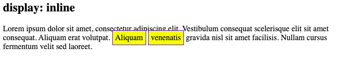
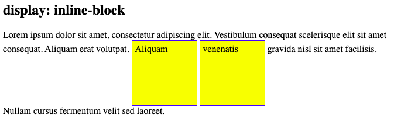

CSS Display Properties: Inline vs Inline Block
In web development, ‘inline’ refers to content that is formatted horizontally, often from left to right, echoing the structure of written text. If you open a word document and drag a picture into it, it’s likely that the picture will be displayed as an inline block: The bottom of the image will have text wrapped around it and the height of the image will create space between that line and the line above it. For example:

As you can see, the bottom of the image is situated on the line on which text is written.
This format best illustrates the “inline block” display method because the height of the image generates space between the lines of text. The “inline” display method would not alter the spaces between the lines of text.
Examples below sourced from w3schools
Each example listed below uses CSS to style a block around a string of text. The CSS parameters are the exact same for each example.
- The height and width are set at 100px, creating the yellow bounded box around the text string.
- There is also padding which is meant to create space between the text and the box edge.
Display:inline
Inline display is best used for styling text and smaller symbols/elements that fit within the height/width of text designated by text properties. Line spacing, kerning and font types/sizes are the text based properties which alter inline height/width. This results in the example below which creates a block around each piece of text that cannot exceed the maximum area designated by these text-based properties.
Display:inline-block
Inline block display is best for styling blocks that fit within lines of text but whose parameters are larger than the text. This means that the dimensions of the block content are prioritized, pushing away the following lines of text from the line it is displayed within. It also prioritizes block styling, which allows for text to be padded within a block. This display type can be useful to create extra space for inline text or an inline object that seems crowded by the text around it.
